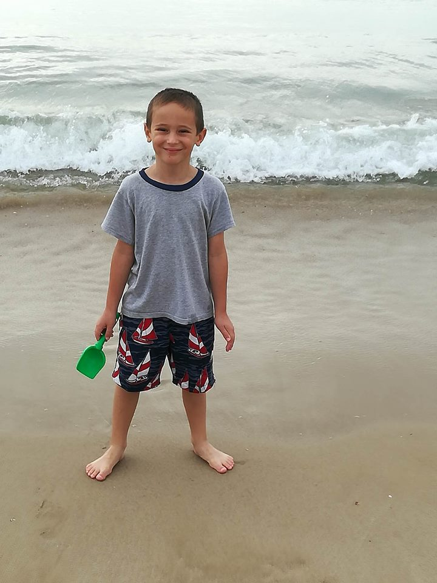
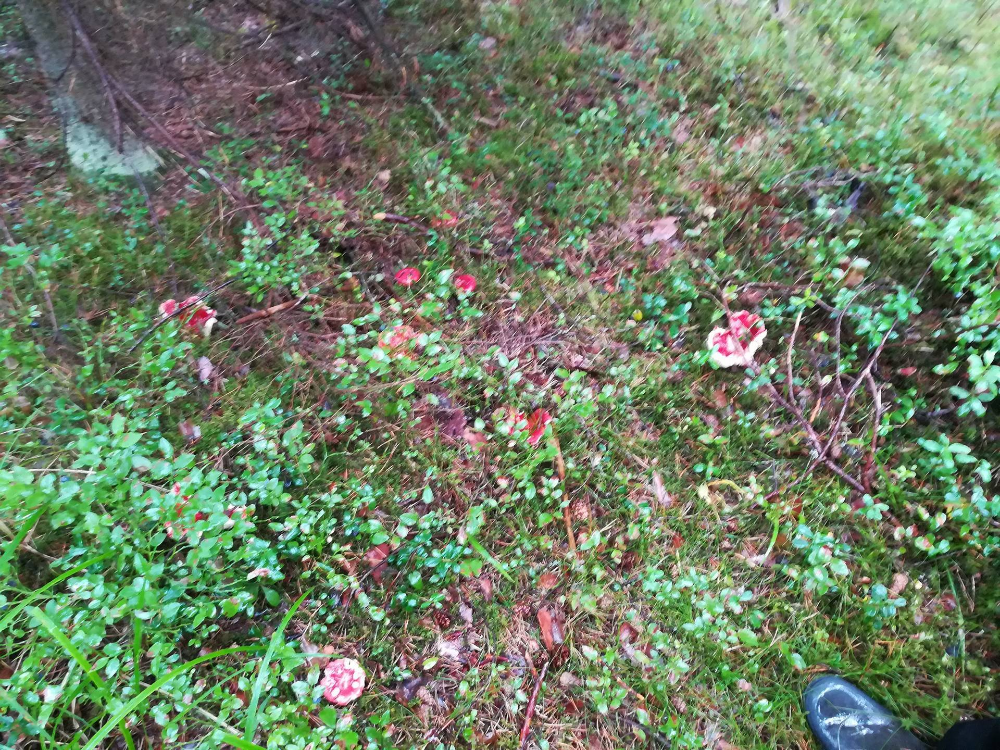
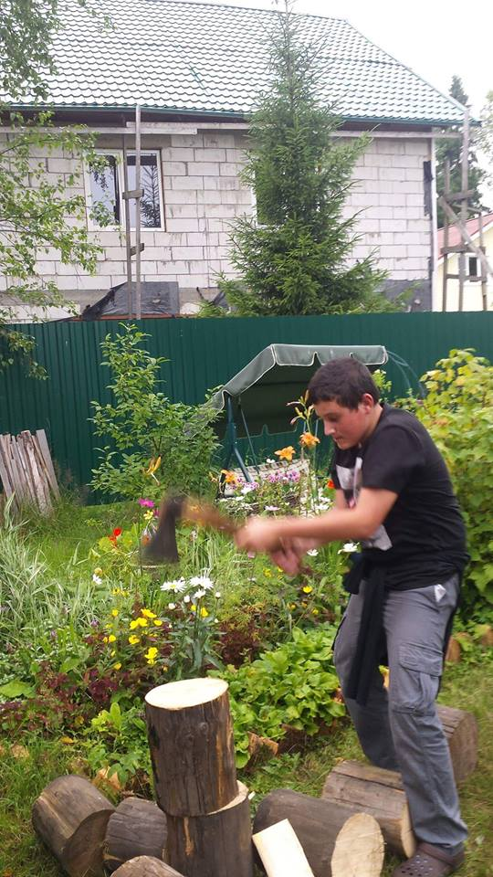
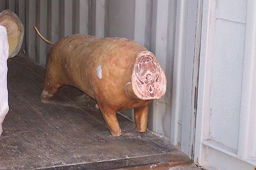

Top 5 Things I did this summer
- Running Dishonered 2 at 10 frames and still beating the game.

Dishonered 2 wikipedia page
- Going to the beach.

The dangers of cold water
- Going into the forest for shrooms.

Worms in the wild mushrooms
- Chopping logs of wood with an axe

Properly handling an axe
- Dissecting a pig for a barbecue.

How to butcher a pig properly